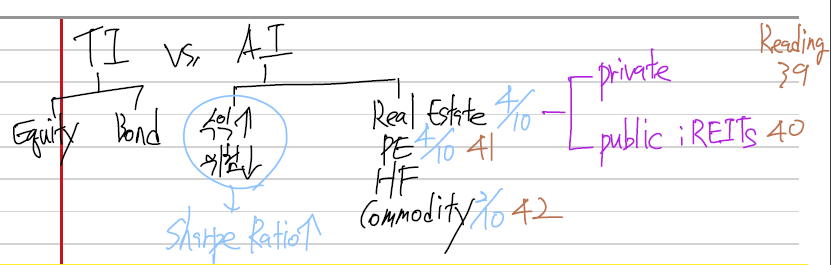

CFA Level 2 Alternative Investment

LOS 39.a: Classify and describe forms of real estate investments.
| Debt | Equity | |
|---|---|---|
| Private | Mortgage | Direct investments such as sole ownership, partnerships, and other forms of commingled funds |
| Public | Mortgage-backed securities | Shares of REITs and REOCs |
REOC (Real Estate Operating Company)
Private vs. Public
Private
- Large size
- undivided, less liquid
- Active management
Public
- Small size
- divided ownership
- diversification
- Passive management
Equity vs. Debt
Equity
- High risk, high return
- Financial leverage
- Upside potential
- Capital gain
- Rental income
Debt
- Senior than equity
- Safe
- Promised cashflow
- No upside
LOS 39.b: Describe the characteristics, the classification, and basic segments of real estate.
Real Estate Characteristics
- Heterogeneity - No two property are exactly the same because of location, size, age, construction materials, and lease terms.
- High unit value
- Active management - Private real estate investment requires active property management.
- High transaction costs - appraisers, lawyers, brokers, and construction personnel
- Depreciation and desirability (매력도)
- Cost and availability of debt capital
- Lack of liquidity
- Difficulty in determining price
- Appraisals are usually to assess real estate values.
- The combination of limited market participants and lack of knowledge of the local markets makes it difficult for an outsider to value property. As a result, the market is less efficient. However, investors with superior information and skill may have an advantage in exploiting the market inefficiencies.
Shares of a REIT are actively traded and more likely to reflect market value. In addition, investing in a REIT can provide exposure to a diversified real estate portfolio. Finally, investors don’t need property management expertise.
Property Classifications
LOS 39.c: Explain the role in a portfolio, economic value determinants, investment characteristics, and principal risks of private real estate.
LOS 39.l: Explain the role in a portfolio, the major economic value determinants, investment characteristics, principal risks, and due diligence of private real estate debt investment.
Reasons to invest in real estate
- Current income
- Capital appreciation
- Inflation hedge
- Diversification - Real estate, especially private equity investment, is less than perfectly correlated with the returns of stocks and bonds.
- Tax benefits - In the United States, the depreciable life of real estate is usually shorter than the actual life. As a result, depreciation expense is higher, and taxable income is lower resulting in lower income taxes. Also REITs do not pay taxes in some countries, which allow investors to escape double taxation.
Principal risks
- Business condition
- New property lead time
- Cost and availability of capital - Demand for real estate is reduced when debt capital is scarce and interest rates are high. Real estate price can be affected by capital market forces without changes in demand from tenants.
- Unexpected inflation - Real estate values may not keep up with inflation when markets are weak and vacancy rates are high.
- Demographic factors - The size and age distribution of the local market population, the distribution of socioeconomic groups, and new household formation rates.
- Lack of liquidity
- Availability of information
- Management expertise - Operational decisions-such as negotiating lease, property maintenance, marketing, and renovating the property
- Leverage - High LTV -> higher risk -> NOI에 큰 영향
- Other factors - natural disaster, and acts of terrorism
The role of real estate in a portfolio
Real estate investment has both bond-like and stock-like characteristics.
Role of leverage in real estate investment
LOS 39.d: Describe commercial property types, including their distinctive investment characteristics.
Commercial property types
- Office - Demand is heavily dependent on job growth
- In a gross lease, the owner is responsible for the operating expenses, and in a net lease, the tenant if responsible.
- In a net lease, the tenant bears the risk if the actual operating expenses are greater than expected.
- Some lease combine features from both gross and net lease.
- Industrial - Demand is heavily dependent on the overall economy. Demand is also affected by import/export activity of the economy.
- Net lease are common
- Retail - Demand is heavily dependent on consumer spending.
- Consumer spending is affected by the overall economy, job growth, population growth, and savings rates.
- An anchor tenant may receive favorable lease terms to attract them to the property. In turn, the anchor tenant will draw other tenants to the property.
- Retail tenants are often required to pay additional rent once sales reach a certain level. This unique feature is known as a percentage lease or percentage rent.
- Multi-family - Demand depends on population growth, especially in the age demographic that typically rents apartments.
- Demand is also affected by the cost of buying versus the cost of renting.
LOS 39.e: Compare the income, cost, and sales comparison approaches to valuing real estate properties.
Real estate appraisals
Valuation approaches
Cost approach
Because of the difficulty in measuring depreciation and obsolescence, the cost approach is most useful when the subject property is relatively new. The cost approach is often used for unusual properties or properties where comparable transactions are limited.

Highest and best use
The concept of highest and best use is important in determining value. The highest and best use of a vacant site is not necessarily the use that results in the highest total value once a project is completed. Rather, the highest and best use of a vacant site is the use that produces the highest implied land value.
Note that the highest and best use is not based on the highest value when the projects are completed but, rather, the highest implied land value.
LOS 39.f: Estimate and interpret the inputs (for example, net operating income, capitalization rate, and discount rate) to the direct capitalization and discounted cash flow valuation methods.
LOS 39.g: Calculate the value of a property using the direct capitalization and discounted cash flow valuation methods.
Income approach
With the direct capitalization method, value is based on capitalizing the first year NOI of the property using a capitalization rate. With the discounted cash flow method, value is based on the present value of the property’s future cash flows using an appropriate discount rate. \[ \\\text{Rental income if fully occupied} \\+ \text{Other income} \\= \text{Potential gross income} \\- \text{Vacancy and collection loss} \\= \text{Effective gross income} \\- \text{Operating expense} \\= \text{Net operating income} \]
The capitalization rate
\[ \\\text{cap rate} = \text{discount rate} - \text{growth rate} \\\text{cap rate} = \frac{\text{NOI}_{1}}{\text{value}} \\V_{0} = \frac{\text{NOI}_{1}}{\text{cap rate}} \\\text{cap rate} = \frac{\text{NOI}_{1}}{\text{comparable sales price}} \]
It is important to observe several comparable transactions when deriving the cap rate. Implicit in the cap rate derived from comparable transactions are investors’ expectations of income growth and risk. In this case, the cap rate is similar to the reciprocal of the price-earnings multiple for equity securities.
All Risks Yield (ARY) - The ARY in the cap rate and will differ from the discount rate if an investor expects growth in rents and value. \[ \\\text{value} = V_{0} = \frac{\text{rent}_{1}}{\text{ARY}} \] If rents are expected to increase at a constant rate each year, the internal rate of return (IRR) can be approximately by summing the cap rate and growth rate.
Stabilized NOI
If NOI is not representative of the NOI of similar properties because of a temporary issue, the subject property’s NOI should be stabilized. For example, suppose a property is temporarily experiencing high vacancy during a major renovation. In this case, the first-year NOI should be stabilized; NOI should be calculated as if the renovation is complete. Once the stabilized NOI is capitalized, the loss in value, as a result of the temporary decline in NOI, is subtracted in arriving at the value of the property.
\[ \\\text{gross income multiplier} = \frac{\text{sales price}}{\text{gross income}} \\\text{value} = \text{gross income} * \text{gross income multiplier} \] ball park figure (약식 계산 방법)
A shortfall of the gross income multiplier is that it ignores vacancy rates and operating expenses. Thus, if the subject property’s vacancy rate and operating expenses are higher than those of the comparable transactions, an investor will pay more for the same rent.
Discounted cash flow method
Terminal cap rate
Valuation with different lease structures
Lease structures can vary by country. For example, in the UK, it is common for tenants to pay all expenses. In this case, the cap rate is known as the ARY. Adjustments must be made when the contract rent (passing or term rent) and the current market rent (open market rent) differ. Once the lease expires, rent will likely be adjusted to the current market rent. In the UK, the property is said to have reversionary potential when the contract rent expires.
A variation of the term and reversion approach is the layer method.
Using the term and reversion approach and the layer method, different cap rates were applied to the term rent and the current market rent after review. Alternatively, a single discount rate, known as the equivalent yield, could have been used. The equivalent yield is an average, although not a simple average, of the two separate cap rates.
Using the discounted cash flow method requires the following estimates and assumptions.
- Project income from existing leases
- Lease renewal assumptions
- Operating expense assumptions - Operating expenses can be classified as fixed, variable, or a hybrid of the two.
- Vacancy assumption
- Estimated resale price
- Appropriate discount rate - The discount rate should be higher than the mortgage rate because more risk.
LOS 39.h: Compare the direct capitalization and discounted cash flow valuation methods.
Under the direct capitalization method, a cap rate or income multiplier is applied to first-year NOI. Implicit in the cap rate or multiplier are expected increases in growth.
Under the discounted cash flow (DCF) method, the future cash flows, including the capital expenditures and terminal value, are projected over the holding period and discounted to present at the discount rate. Future growth of NOI is explicit in the DCF method.
Because of the inputs required, the DCF method is more complex than the direct capitalization method, as it focuses on NOI over the entire holding period and not just NOI in the first year. Choosing the appropriate discount rate and terminal cap rate are crucial as small differences in the rates can significantly affect value.
Following are some common errors made using the DCF method:
- The discount rate does not adequately capture risk.
- Income growth exceeds expense growth.
- The terminal cap rate and the going-in-cap rate are not consistent.
- The terminal cap rate is applied to NOI that is atypical.
- The cyclicality of real estate markets is ignored.
LOS 39.i: Calculate the value of a property using the cost and sales comparison approaches.
Cost approach
Step 1: Estimate the market value of the land.
Step 2: Estimate the building’s replacement cost. Replacement cost is based on current construction costs and standards and should include any builder/developer’s profit.
- Replacement cost refers to the cost of a building having the same utility but constructed with modern building materials. (지금 구할 수 있는 소나무 사용) Reproduction cost refers to the cost of reproducing an exact replica of the building using the same building materials, architectural design, and quality of construction. (400년 된 소나무 사용) Replacement cost is usually more relevant for appraisal purposes because reproduction cost may be uneconomical.
Step 3: Deduct depreciation including physical deterioration, functional obsolescence, locational obsolescence, and economic obsolescence. Physical deterioration is related to the building’s age and occurs as a result of normal wear and tear over time. Physical deterioration can be curable or incurable.
An item is incurable if the problem is not economically feasible to remedy. For example, the cost of fixing a structural problem might exceed the benefit of the repair. Since a incurable defect would not be fixed, depreciation can be estimated based on the effective age of the property relative to its total economic life. For example, the physical depreciation of a property with an effective age of 30 years and a 50-year total economic life is 60% (30 year effective age / 50 year economic life).
Functional obsolescence is the loss in value resulting from defects in design that impairs a building’s utility.
Locational obsolescence occurs when the location is no longer optional. A prison is built down the street making the location of the apartment complex less desirable.
Economic obsolescence occurs when new construction is not feasible under current economic conditions. This can occur when rental rates are not sufficient to support the property.
Because of the difficulty in measuring depreciation and obsolescence, the cost approach is most useful when the subject property is relatively new.
The cost approach is sometimes considered the upper limit of value since an investor when never pay more than the cost to build a comparable building.
Sales comparison approach
The sales comparison approach is most useful when there are a number of properties similar to the subject that have been recently sold, as is usually the case with single-family homes. Even in an active market, there may be limited transactions of specialized property types, such as regional malls and hospitals. The sales comparison approach assumes purchaser are acting rationally. However, there are times when purchaser become overly exuberant and market bubbles occur.
Reconciliation of value
An important part of the appraisal process involves determining the final estimate of value by reconciling the value differences in the three approaches.
For example, an appraiser might apply a higher weight to the value obtained with the sales comparison approach when the market is active with plenty of comparable properties. Alternatively, if the subject property is old and estimating depreciation is difficult, an appraiser might apply a lower weight to the cost method.
LOS 39.j: Describe due diligence in private equity real estate investment.
- Lease review and rental history
- Confirm the operating expenses by examining bills
- Review cash flow statement
- Obtain an environmental report to identify the possibility of contamination
- Perform a physical/engineering inspection
- Inspect the title and other legal documents for defeiciencies
- Have the property surveyed to confirm the boundaries and identify easements (사용권)
- Verify compliance with zoning laws, building codes, and environmental regulations
- Verify payment of taxes, insurance, special assessments, and other expenditures
LOS 39.k: Discuss private equity real estate investment indexes, including their construction and potential bias.
Appraisal-based indices
A popular index in the United States in the NCREIF Property Index (NPI). Member of NCREIF, mainly investment managers and pension fund sponsors, submit appraisal data quarterly, and NCREIF calculates the return as follows: \[ \\ \text{return} = \frac{NOI - \text{capital expenditures} + (\text{end market value} - \text{beg market value})}{\text{beginning market value}} \\ \] Appraisal-based indices tend to lag actual transactions because actual transactions occur before appraisals are performed. Thus, a change in price may not be reflected in appraised values until the next quarter or longer if a property is not appraised every quarter. Also, appraisal lag tends to smooth the index; that is, reduce its volatility, much like a moving average reduces volatility. Finally, appraisal lag results in lower correlation with other asset classes. Appraisal lag can be adjusted by unsmoothing the index or by using a transaction-based index.
Transaction-based indices
A repeat-sales index relies on repeat sales of the same property.
A hedonic index requires only one sale. A regression is developed to control for differences in property characteristics such as size, age, location, and so forth.
LOS 39.m: Calculate and interpret financial ratios used to analyzed and evaluate private real estate investments.
Debt Service Coverage Ratio (DSCR) and Loan-to-Value (LTV)
\[ \\ \text{DSCR} = \frac{\text{first-year\, NOI}}{\text{debt service}} \\ \text{LTV} = \frac{\text{loan amount}}{\text{appraisal value}} \\ \]
Equity dividend rate
\[ \\ \text{equity dividend rate} = \frac{\text{first year cash flow}}{\text{equity}} \\ \]
Leveraged IRR and unleveraged IRR
In order to calculate the IRR with leverage, we need to consider the cash flows over the entire holding period including the change in value of the original investment.
We can see the effects of leverage by calculating an unleveraged IRR. In this case, the initial cash outflow is higher because no debt is incurred.
LOS 40.a: Describe types of publicly traded real estate securities.
Equity REITs (Real Estate Investment Trusts)
REITs are tax-advantaged companies (trusts) that are for most part exempt from corporate income tax. Equity REITs are actively managed, own income-producing real estate. Still diversifying holdings by geography and other factors.
REOCs (Real Estate Operating Companies)
REOCs are not tax-advantaged; rather, they ordinarily corporations that own real estate. A business will form as a REOC if it is ineligible to organized as REIT. For example, the firm may intend to develop and sell real estate rather than generating cash flow rental payments, or the firm may be based in a country that does not allow tax-advantaged REITs.
Residential or commercial mortgage-backed securities (MBS)
Residential or commercial mortgage-backed securities are publicly traded asset-backed securitized debt obligations that receive cash flows from an underlying pool of mortgage loans. These loans may be for commercial properties (in the case of CMBS) or on residential properties (in the case of RMBS). Real estate debt securities represent a far larger aggregate market value than do publicly traded real estate equity securities.
Mortgage REITs
Mortgage REITs invest primarily in mortgage, mortgage securities, or loans that are secured by real estate.
LOS 40.b: Explain advantages and disadvantages of investing in real estate through publicly traded securities.
Advantages
- Superior liquidity - Because REIT and REOC shares trade daily on a stock exchange.
- Lower minimum investment - REIT or REOC shares trade for much smaller dollar amounts.
- Limited liability - The financial liability of a REIT investor is limited to the amount invested.
- Access to premium properties - Some prestigious properties, such as high-profile shopping malls or other prominent or landmark buildings, are difficult to invest in directly.
- Active professional management - REITs and REOCs employ professional management to control expenses, maximize rents and occupancy rates, and sometimes to acquire additional properties.
- Protections accorded to publicly traded securities - Investors benefit from these securities regulations and from having a board overseeing the management on behalf of investors. Additionally, having public investors monitor the actions of management and the board of directors leads to financial and operating efficiency.
- Greater potential for diversification - Through REITs, however, an investor can diversify across property type and geographical location.
REIT-specific advantages
- Exemption from taxation - As long as certain requirements are met, REITs enjoy favorable taxation, because a major part of REIT distributions are treated as a return of capital and are thus not taxable.
- Predictable earnings - REITs’ rental income is fixed by contracts, unlike the income of companies of other industries.
- High yield - REITs are obligated to pay out mot of their taxable income as dividends. Because of this high income payout ratio, the yields of REITs are higher than the yields on most other publicly traded equities.
Disadvantages
- Taxes versus direct ownership - Depending on local laws, investors that make direct investments in properties may be able to deduct losses on real estate from taxable income or replace one property for a similar property (“like-kind exchange” in the US) without taxation on the gains.
- Lack of control
- Costs of a publicly traded corporate structure
- Price is determined by the stock market - While the appraisal-based value of a REIT may be relative stable, the market-determined price of a REIT share is likely to be much more volatile. Appraisals tend to be infrequent and backward-looking, while the stock market is continuous and reflects forward-looking values.
- Structural conflicts of interest - When the opportunity arises to sell properties or take on additional borrowing, a particular action may have different tax implications for REIT shareholders and for the general partners, which may tempt the general partners to act in their own interest, rather than in the interest of all stakeholders.
REIT-specific disadvantages
- Limited potential for income growth - REIT’s high rates of income payout limit REIT’s ability to generate future growth through reinvestment.
- Forced equity issuance - When credit is difficult to obtain, a REIT may be forced to issue equity at a disadvantageous price.
- Lack of flexibility - The rules that qualify REITs for favorable taxation also have a downside: REITs are prevented from making certain kinds of investments and from retaining most of their income. These limits may prevent REITs from being as profitable as they might otherwise be. REOCs, on the other hand, do not need to meet these requirements, and thus are free to retain income and devote those funds to property development when the REOC managers see attractive opportunities. REOCs are also not restricted in their use of leverage.
LOS 40.d: Describe types of REITs
Retail
Investment characteristics
- Stable revenue stream over the short term
Principal risks
- Depends on consumer spending
Due diligence considerations
- Per-square-foot sales and rental rates
- Anchor tenant - long-term fixed lease
- Smaller tenant - percentage lease
Office
Investment characteristics
- Long (5-25 years) lease terms
- Stable year-to-year income
Principal risks
- Changes in office vacancy and rental rates
Due diligence considerations
- New space under construction
- Quality of office space (location, condition of building, and so on)
Residential
Investment characteristics
- One-year leases
- Stable demand
Principal risks
- Competition
- Inducements (전입)
- Regional economy
- Inflation in operating costs
Due diligence considerations
- Demographics and income trends
- Age and competitive appeal
- Cost of home ownership
- Rent controls by local government
Industrial
Investment characteristics
- Less cyclical than some other REIT types
- 5-25 year net leases
- Change in income and values are slow
Principal risks
- Shifts in the composition of local and national industrial bases and trade
Due diligence Considerations
- Trends in tenants’ requirements
- Obsolescence of existing space
- Need for new types of space
- Proximity to transportation (airport, seaport, road)
- Trends in local supply and demand
Hotel
Investment characteristics
- Variable income
- Sector is cyclical because it is not protected by long-term leases
Principal risks
- Exposed to business-cycle
- Changes in business and leisure travle
- Exposure to travel distruptions
Due diligence considerations
- Occupancy, room rates, and operating profit margins vs. industry average
- Revenue per available room (RevPAR)
- Trends in forward bookings
- Maintenance expenditures
- New construction in local markets
- Financial leverage
- Margin level
- F&B sales
Storage
self-storage, 개인 물건 보관 창고
Investment characteristics
- Space is rented under gross leases and on a monthly basis
Principal risks
- Ease of entry can lead to overbuilding
Due diligence considerations
- Construction of new competitive facilities
- Trends in housing sales
- Demographic trends
- New business start-up activity
- Seasonal trends in demand for storage facilities that can be significant in some markets
LOS 40.f: Describe the use of funds from operations (FFO) and adjusted funds from operations (AFFO) in REIT valuation.
Fund from operations
\[ \\ \text{Accounting net earnings} \\+ \text{Depreciation and amortization expense} \\- \text{Gains from sales of property} \\+ \text{Losses from sales of property} \\= \text{Funds from operations} \\ \]
Depreciation is added back under the premise that accounting depreciation often exceeds economic depreciation for real estate. Gains from sales of property are excluded because these are not considered to be part of continuing income.
Adjusted funds from operations
AFFO is also known as cash available for distribution (CAD) or funds available for distribution (FAD). \[ \\\text{FFO\, (funds\, from\, operations)} \\- \text{Non-cash\, (straight-line)\, rent\, adjustment} \\- \text{Recurring\, maintenance-type\, capital\, expenditures\, and\, leasing\, commissions} \\= \text{AFFO\, (adjusted\, funds\, from\, operations)} \\ \] Straight-line rent refers not to the cash rent paid during the lease but rather to the average contractual rent over a lease period-the two figures differ by non-cash rent, which reflects contractually-increasing rental rates. Capital expenditures related to maintenance, as well expenses related to leasing the space in properties, are subtracted from FFO because they represent costs that must be expended in order to maintain the value of the properties.
AFFO is considered a better measure of economic income than FFO because AFFO considered the capital expenditures that are required to sustain the property’s economic income. However, FFO is more frequently cited in practice, because AFFO relies more on estimates and is considered more subjective.
LOS 40.g: Compare the net asset value, relative value (price-to-FFO and price-to-AFFO), and discounted cash flow approaches to REIT valuation.
Relative value (price-to-FFO and price-to-AFFO)
There are three key factors that impact that price-to-FFO and price-to-AFFO of REITs and REOCs:
- Expectations for growth of FFO and AFFO.
- The level of risks inherent in the underlying real estate.
- Risk related to the firm’s leverage and access to capital.
Discounted cash flow approach
Dividend discount and discounted cash flow models of valuation are appropriate for use with REITs and REOCs, because these two investment structures typically pay dividends and thereby return a high proportion of their income to investors. For dividend discount models, an analysts will develop near-term, medium-term, and long-term growth forecasts and then use these values at the basis for two- or three-stage dividend discount models. To build a discounted cash flow model, analysts will generally create intermediate-term cash flow projections plus a terminal value that is developed using historical cash flow multiples.
LOS 41.a: Explain sources of value creation in private equity.
The sources of this increased value are thought to come from the following:
- The ability to re-engineering the portfolio company and operate it more efficiently.
- The ability to obtain debt financing on more advantageous terms.
- Superior alignment of interests between management and private equity ownership.
Re-engineering the portfolio company
Experienced industry CEOs, CFOs, and other former senior executives. These executives can share their expertise and contracts with portfolio company management.
Obtaining favorable debt financing
A second source of added value is from more favorable terms on debt financing. In PE firms, debt is more heavily utilized and is quoted as a multiple of EBITDA (earnings before interest, taxes, depreciation, and amortization) as opposed to a multiple of equity, as for public firm.
The central proposition of the Modigliani-Miller theorems is that the use of debt versus equity is inconsequential for firm value. However, once the assumption of no taxes is removed from their model, the tax savings from the use of debt increases firm value. The use of greater amount of financial leverage may increase firm value in the case of private equity firms. Because these firms have a reputation for efficient management and timely payment of debt interest, this helps to allay concerns over their highly leveraged positions and helps maintain their access to the debt markets.
According to this view, the requirement to make interest payments forces the portfolio companies to use free cash flow more efficiently because interest payments must be made on the debt.
Much of the debt financing for private equity firms comes from the syndicated loan market, but the debt is often repackaged and sold as collateralized loan obligations (CLOs). Private equity firms may also issue high-yield bonds which are repackaged as collateralized debt obligations (CDOs).
A third source of value added for PE firms is the alignment of interests between private equity owners and the managers of the portfolio companies they own.
LOS 41.b: Explain how private equity firms align their interests with those of the managers of portfolio companies.
In many private equity transactions, ownership and control are concentrated in the same hands. In buyout transactions, management often has a substantial stake in the company’s equity. In many venture capital investments, the private equity firm offers advice and management expertise.
In private equity firms, managers are able to focus more on long-term performance because, unlike public companies, private companies do not face the scrutiny of analysis, shareholders, and the broader market. This also allows the private equity firms to hire managers that are capable of substantial restructuring efforts.
Control mechanisms
Private equity firms use a variety of mechanisms to align the interests of the managers of portfolio companies with the private equity firm’s interests.
- Compensation - Compensation that is closely linked to the company’s performance.
- Tag-along, drag-along clauses
- Board representation - The private equity firm is ensured control through board representation.
- Noncompete clauses - Company founders must agree to clauses that prevent them from competing against the firm within a prespecified period of time.
- Priority in claims - Private equity firms receive their distributions before other owners, often in the form of preferred dividends. They also have priority on the company’s assets if the portfolio company is liquidated.
- Required approvals - Changes of strategic importance (e.g., acquisitions, divestitures, and changes in the business plan) must be approved by the private equity firm.
- Earn-outs - There are used predominantly in venture capital investments. Earn-outs tie the acquisition price paid by the private equity firm to the portfolio company’s future performance over a specified time period.
LOS 41.c: Distinguish between the characteristics of buyout and venture capital investments.
경영권 획득 여부 차이
Key differences between venture capital and buyout investments
| Characteristics | Venture Capital Investments | Buyout Investments |
|---|---|---|
| Cash Flows | Low predictability with potentially unrealistic projections | Stable and predictable cash flows |
| Product Markets | New product market with uncertain future | Strong market position with a possible niche position |
| Products | Product is based on new technology with uncertain prospects | Established products |
| Asset Base | Weak | Substantial base that can serve as collateral |
| Management Team | New team although individual members typically have a strong entrepreneurial record | Strong and experienced |
| Financial Leverage | Low debt use with a majority of equity financing | High amount of debt with a large percentage of senior debt and substantial amounts of junior and mezzanine debt |
| Risk Assessment | Risk is difficult to estimate due to new technologies, markets, and company history | Risk can be estimated due to industry and company maturity |
| Exit | Exit via IPO or company sale is difficult to forecast | Exit is predictable |
| Operations | High cash burn rate required due to company and product immaturity | Potential exists for reduction in inefficiencies |
| Working Capital Required | Increasing requirements due to growth | Low requirements |
| Due Diligence Performed by Private Equity Firms | Private equity firms investigate technological and commercial prospects; investigation of financials is limited due to short history | Private equity firms perform extensive due diligence |
| Goal Setting | Goals are milestone set in business plan and growth strategy | Goal reference cash flows, strategic plan, and business plan |
| Private Equity Investment Returns | High returns come from a few highly successful investments with write-offs from less successful investments | Low variability in the success of investments with failures being rare |
| Capital Market Presence | Generally not active in capital markets | Active in capital markets |
| Sales Transactions | Most companies are sold as a result of the relationship between venture capital firm and entrepreneurs | Companies are typically sold in an auction-type process |
| Ability to Grow Through Subsequent Funding | Companies are less scalable as subsequent funding is typically smaller | Strong performances can increase subsequent funding amounts |
| Source of General Partner’s Variable Revenue | Carried interest is most common, transaction and monitoring fees are less common | Carried interest, transaction fees, and monitoring fees |
General valuation issues for private equity
Public companies are bough and sold on regulated exchange daily. Private companies, however, are bought by buyers with specific interests at specific points in time, with each potential buyer possibly having a different valuation for the company. Furthermore, valuing a private company is more difficult than valuing public companies because PE firms often transform and reengineering the portfolio company such that cash flow estimates are difficult to obtain.
Private equity valuation methodologies
- Discounted cash flow (DCF) analysis is most appropriate for companies with a significant operating history.
- A relative value or market approach applies a price multiple, such as the price-earnings ratio. This approach requires predictable cash flows and a significant history.
- Real option analysis is applicable for immature companies with flexibility in their future strategies.
- Replacement cost - It is generally not applicable to mature companies.
- Venture capital method and the leveraged buyout method
Other considerations
Other considerations for valuing private equity portfolio companies are control premiums, country risk, and marketability and illiquidity discounts.
Price multiples
To value private equity portfolio companies, many investors use market data from similar publicly traded companies, most commonly the price multiples from comparable public companies. However, it is often difficult to find public companies at the same stage of development, same line of business, same capital structure, and same risk. A decision must also be made as to whether trailing or future earnings are used. For these reasons, a relative value or market approach should be used carefully.
Discounted cash flow analysis
Market data is also used with discounted cash flow (DCF) analysis, with beta and the cost of capital estimated from public companies while adjusting for differences in operating and financial leverage between the private and public comparables. In DCF analysis, an assumption must be made regarding the company’s future value. Typically a terminal value is calculated using a price multiple of the company’s EBITDA.
Buyout valuation issues

Types of buyouts
In a buyout transaction, the buyer acquires a controlling equity position in a target company. Buyouts include takeovers, management buyouts (MBOs), and leveraged buyouts(LBOs). This review focuses on LBOs, in which a high amount of debt is used to finance a substantial portion of the acquisition. The financing of a LBO typically involves senior debt, junk bonds, equity, and mezzanine finance. Mezzanine finance is a hybrid debt and equity and can be structured to suit each particular transaction.
Leveraged buyout (LBO)
The view of the LBO transaction, referred to as the LBO model, is not a form of valuation but rather a method of factoring in the company’s capital structure and other parameters to determine the return the private equity firm should expect from the transaction. The objective is not to value the company but to determine the maximum price in negotiation that the private equity firm should pay for its stake.
LBO model
three main inputs:
- The target company’s forecasted cash flows
- The expected returns to the providers of the financing
- The total amount of financing
LOS 41.d: Describe valuation issues in buyout and venture capital transactions.
Exit value
\[ \\\text{investment cost} + \text{earnings growth} + \text{increase in price multiple} + \text{reduction in debt} = \text{exit value} \]
The components of the return are:
- The return on the preference shares for the private equity firm.
- The increased multiple upon exit.
- The reduction in the debt claim.
In most LBOs, most of the debt is senior debt that will amortize over time. In the preceding example, the debtholders’ claim on assets was reduced from $600 to $250. The use of debt in this example is advantageous and magnifies the returns to the equityholders.
Valuation issues in venture capital investments
Pre- and Post money valuation
The post-money valuation of the investee company is: \[ \\\operatorname{PRE} + \operatorname{INV} = \operatorname{POST} \\\text{The ownership proportion of the venture capital investor} = \operatorname{INV} / \operatorname{POST} \]
Appropriate methods for venture capital valuation
The pre-money valuation and investment will be negotiated between the investee company and the VC investor. Additionally, the VC investor should keep in mind that his ownership could be diluted in the future due to future financing, conversion of convertible debt into equity, and the issuance of stock options to management.
It is difficult to forecast the cash flows for a VC portfolio company. Discounted cash flow analysis (the income approach) is not usually used as the primary valuation method for VC companies. It is also difficult to use a relative value or market approach. This is because a VC company is often unique, and there many be no comparable companies to estimate a benchmark price multiple from. A replacement cost approach may also be difficult to apply. Alternative methodologies include real option analysis and the venture capital method.
To estimate the pre-money valuation, the VC investor typically examines the company’s intellectual property and capital, the potential for the company’s products, and its intangible assets.
Valuation issues: Buyout vs. Venture capital
| Valuation Issue | Buyout | Venture Capital |
|---|---|---|
| Applicability of DCF Method | Frequently used to estimate value of equity | Less frequently used as cash flows are uncertain |
| Applicability of Relative Value Approach | Used to check the value from DCF analysis | Difficult to use because there may be no truly comparable companies |
| Use of Debt | High | Low as equity is dominant form of financing |
| Key Drivers of Equity Return | Earnings growth, increase in multiple upon exit, and reduction in the debt | Pre-money valuation, investment, and subsequent dilution |
Valuation methodologies for buyouts need to factor in the level and pattern of leverage over the investment term.
Earn-out - target company의 상승을 따라가는 것
LOS 41.e: Explain alternative exit routes in private equity and their impact on value.
Types of exit routes
The means and timing of the exit strategy influence the exit value.
- an initial public offering (IPO)
- secondary market sale
- management buyout (MBO)
- liquidation
Initial public offering (IPO)
An IPO usually results in the highest exit value due to increased liquidity, greater access to capital, and the potential to hire better quality managers. However, an IPO is less flexible, more costly, and a more cumbersome process than the other alternatives.
IPOs are most appropriate for companies with strong growth prospects and a significant operating history and size. The timing of an IPO is key.
VC
Secondary market sale
In a secondary market sale, the company is sold to another investor or to another company interested in the purchase for strategic reasons. Secondary market sales from one investor to another are quite frequent, especially in the case of buyouts. VC portfolio companies are sometimes exited via a buyout to another firm, but VC companies are usually too immature to support a large amount of debt. Secondary market sales result in the second highest company valuation after IPOs.
Trade sale, M&A
Buyout
Management buyout (MBO)
In an MBO, the company is sold to management, who utilize a large amount of leverage. The resulting high leverage may limit management’s flexibility.
Liquidation
When the company is deemed no longer visible and usually results in a low value. There is potential for negative publicity as a result of displaced employees and from the obvious implications of the company’s failure to reach its objectives.
Exit timing
For example, if a portfolio company cannot be sold due to weak capital markets, the private equity firm may want to consider buying another portfolio company at depressed prices, merging the two companies, and waiting until capital market conditions improve to sell both portfolio companies as one.
When an exit is anticipated in the next year or two, the exit valuation multiple can be forecasted without too much error. Beyond this time horizon, however, exit multiples become much more uncertain and stress testing should be performed on wide range of possible values.
LOS 41.f: Explain private equity fund structures, terms, valuation, and due diligence in the context of an analysis of private equity fund returns.
Limited partnership
The limited partners (LPs) provide funding and do not have an active role in the management of the investments. Their liability is limited to what they have invested. The general partner (GP) in a limited partnership is liable for all the firm’s debts and, thus, has unlimited liability. The GP is the manager of the fund.
Another form of private equity fund structure is the company limited by shares. It offers better legal protection to the partners, depending on the jurisdiction. Most fund structures are closed end, meaning that investors can only redeem the investment at specified time periods.
The private equity firm usually spends a year or two raising funds. Funds are then drawn down (capital call) for investment, after which returns are realized. Most private equity funds last 10 to 12 years but can have their life extended another 2 to 3 years.
Private equity fund terms
Private equity investments are often only available to qualified investors, the definition of which depends on the jurisdiction. In the United States, the individual must have at least $1 million in assets.
If the fund is oversubscribed, the GP has greater negotiating power.
The terms of the fund should be focused towards aligning the interests of the GP and LPs and specifying the compensation of the GP.
Economic terms of a private equity fund
Committed capital is the amount of funds promised by investors to private equity funds. Paid-in capital is the amount of funds actually received from investors (also referred to as invested capital).
Management fees
These are fees paid to the GP on annual basis as a percent of committed capital. Management fees could instead be based on NAV or paid-in capital.
Transaction fees
There are paid by third parties to the GP in their advisory capacity (e.g., for investment banking services, such as arranging a merger).
Carried interest / performance fees
This is the GP’s share of the fund profits.
Ratcher
This specifies the allocation of equity between stockholders and management of the portfolio company and allows management to increase their allocation, depending on company performance.
Hurdle rates
This is the IRR that the fund must meet before the GP can receive carried interest.
Target fund size
The stated total maximum size of the PE fund, specified as an absolute figure. It is a negative signal if actual funds ultimately raised are significantly lower than targeted.
Vintage
This is the year the fund was started and facilitates performance comparisons with other funds.
Terms of the fund
As discussed previously, this is the life of the firm and is usually ten years.
Corporate governance terms of a private equity fund
Key man clause
If a key named executive leaves the fund or does not spend a sufficient amount of time at the fund, the GP may be prohibited from making additional investments until another key executive is selected.
Performance disclosure and confidentiality
This specified the fund performance information that can be disclosed. Note that the performance information for underlying portfolio companies is typically not disclosed.
Clawback
In a deal-by-deal method, carried interest can be distributed after each individual deal. The disadvantage of this method from the LP’s perspective is that one deal could earn $10 million and another could lose $10 million, but the GP will received carried interest on the first deal, even though the LPs have not earned an overall positive return.
In the total return method, carried interest is calculated on the entire portfolio. There are two variants of the total return method: 1) carried interest can be paid only after the entire committed capital is returned to LPs; or 2) carried interest can be paid when the value of the portfolio exceeds invested capital by some minimum amount.
Tag-along, drag-along clauses
No-fault divorce
This clause allows a GP to be fired if a supermajority (usually 75% or more) of the LPs agree to do so.
Removal for cause
This provision allows for the firing of the GP or the termination of a fund given sufficient cause (e.g., a material breach of fund prospectus).
Investment restrictions
These specify leverage limits, a minimum amount of diversification, etc.
Co-investment
This provision allows the LPs to invest in other funds of the GP at low or no management fees. The provision also prevents the GP from using capital from different funds to invest in the same portfolio company.

Due diligence of private equity fund investments
- First, private equity funds have returns that tend to persist.
- Second, the return discrepancy between outperformers and underperformers is very large and can be as much as 20%.
- Third, private equity investments are usually illiquid, long-term investments.
LOS 41.g: Explain risks and costs of investing in private equity.
General risk factors
- Liquidity risk
- Unquoted investments risk
- Competitive environment risk - The competition for finding reasonably-priced private equity investments may be high.
- Agency risk - The managers of private equity portfolio companies may not act in the best interests of the private equity firm and investors.
- Capital risk - Increases in business and financial risks may result in a withdrawal of capital. Portfolio companies may find the subsequent rounds of financing are difficult to obtain.
- Regulatory risk
- Tax risk
- Valuation risk - The valuation of private equity investments reflects subjective, not independent, judgment.
- Diversification risk - Private equity investments may be poorly diversified.
- Market risk - Private equity is subject to long-term changes in interest rates, exchange rates, and other market risks. Short-term changes are usually not significant risk factors.
Costs of private equity investing
- Transaction costs - These costs include those from due diligence, bank financing, legal fees from acquisition, and sales transactions in portfolio companies.
- Investment vehicle fund setup costs - The legal and other costs of setting up the fund are usually amortized over the life of the fund.
- Administrative costs - These are charged on a yearly basis and include custodian, transfer agent, and accounting costs.
- Audit costs
- Management and performance costs - 2% for the management fee and a 20% fee for performance.
- Dilution costs - Additional rounds of financing and stock options granted to portfolio company management will result in dilution. This is also true for options issued to the private equity firm.
- Placement fees - Placement agents who raise funds for private equity firms may charge up-front fees as much as 2% or annual trailer fees as a percent of funds raised through limited partners.
LOS 41.h: Interpret and compare financial performance of private equity funds from the perspective of an investor.
Internal rate of return (IRR)
The return metric recommended for private equity by the Global Investment Performance Standards (GIPS) is the IRR. The IRR is a cash-weighted (money-weighted) return measure. Although the private equity fund portfolio companies are actually illiquid, IRR assumes intermediate cash flows are reinvested at the IRR.
Gross IRR
The IRR can be calculated gross or net of fees. Gross IRR is the relevant measure for the cash flows between the fund and portfolio companies.
Net IRR
Net IRR can differ substantially from Gross IRR because it is net of management fees, carried interest, and other compensation to the GP. Net IRR is the relevant measure for the cash flows between the fund and LPs and is therefore the relevant return metric for the LPs.
Multiples
Multiples are a popular tool of LPs due to their simplicity, ease of use, and ability to differentiate between realized and unrealized returns. Multiples, however, ignore the time value of money.
Quantitative measures
PIC (paid-in capital)
DPI (distributed to paid-in capital)
RVPI (residual value to paid-in capital)
TVPI (total value to paid-in capital)
Qualitative measures
- The realized investments, with an evaluation of successes and failrues.
- The unrealized investments, with an evaluation of exit horizons and potential problems.
- Cash flow projections at the fund and portfolio company level.
- Fund valuation, NAV, and financial statements.
As an example, consider a fund that was started before the financial market collapse of 2007. If the RVPI is large relative to the DPI, this indicates that the firm has not successfully harvested many of its investments and that the fund may have an extended J-curve (it is taking longer than realized to earn a positive return on its investments). The investor should carefully examine the GP’s valuations of the remaining portfolio companies, potential write-offs, and whether the routes for future exit have dried up.
Benchmarks
The benchmarking of private equity investments can be challenging. Private equity funds vary substantially from one to another.
Because there are cyclical trends in IRR returns, the Net IRR should be benchmarked against a peer group of comparable private equity funds of the same vintage and strategy.
Note also that the private equity IRR is cash flow weighted whereas most other asset class index returns are time weighted.
LOS 41.i: Calculate management fees, carried interest, net asset value, distributed to paid in (DPI), residual value to paid in (RVPI), and total value to paid in (TVPI) of a private equity fund.
\[ \\\operatorname{NAV before distribution}_{t} = \operatorname{NAV after distribution}_{t-1} + \operatorname{capital called down}_{t} - \operatorname{management fees}_{t} \pm\operatorname{Operation result}_{t} \\\operatorname{NAV before distribution} - \operatorname{GP carry} - \operatorname{LP distribution} = \operatorname{NAV after distribution} \]
LOS 41.k: Demonstrate alternative methods to account for risk in venture capital.
The discount rate used and the estimate of terminal value will strongly influence the current valuation.
Projections by entrepreneurs are typically overly optimistic and based on an assumption that the company will not fail. Instead of arguing over the validity of the projections with the entrepreneurs, most investors simply apply a high discount rate that reflects both the probability of failure and lack of diversification available in these investments.
Adjusting the discount rate
To adjust the discount rate to reflect the risk that the company may fail in any given year. \[ \\\text{probability of failure} = q \\r^{*} = \frac{1 + r}{1 - q} - 1 \] Alternatively, the investor could have deflated each future cash flow for the cumulative probability that the company will fail. The adjusted discount rate approach is more straightforward.
Adjusting the terminal value using scenario analysis
A second approach to generating a realistic valuation is to adjust the terminal value for the probability of failure or poor results. We should therefore use scenario analysis to calculate an expected terminal value, reflecting the probability of different terminal value under different assumptions.
Difficulties
- 진정으로 유사한 comparable 찾기 어려움
- volatile multiple <- scenario analysis 적용
In summary, VC valuation is highly dependent on the assumption used and how risk is accounted for. Additionally, scenario and sensitivity analysis should be used to determine how changes in the input variables will affect the valuation of the company.
The purpose is to place some bounds on the value of the company before negotiations begin between the startup (investee) company and the private equity firm. The final price paid for the investee company will also be affected by the bargaining power of the respective parties.
LOS 42.a: Compare characteristics of commodity sectores.
- Energy - crude oil, natural gas, and refined petroleum products
- Industrial metals - aluminum, nickel, zinc, lead, tin, iron, and copper
- Grains - wheat, corn, soybeans, and rice
- Livestock - hogs, sheep, cattle, and poultry
- Precious metals - gold, silver, and platinum
- Softs (cash crops) - coffee, sugar, cocoa, and cotton
Crude oil
- Viscosity / Sulfur
- Storage - 장기보관
- Drilling / Extraction technology
- Refining technology
- Economic cycle
- Alternative source of energy
- Environmental concern - ESG
- Political risk
Refined product
- Only stored for short period
- Geographic concentration
- Seasonal effect - vacation, travel, heating oil
Natural gas
- Transportation cost
- Very little processing
- Associated gas / Unassociated gas
- Similar to crude oil supply / demand
- More influence from seasonality - heating, cooling
Industrial metal
- GDP growth, business cycle
- Low storage cost
- Political factors - Union strike, environment
- Large scale
Precious metal
- Jewelry - value storage, hedge for inflation
- Industrial - business cycle
Live stock
- Grain price - Grain price up -> 도살 증가 -> price down -> 후에 price up
- Weather
- Disaster
- Income growth in developing countries
Soft
- Weather - mild climate
- Disease
- Income in developing countries
- Consumer taste
LOS 42.b: Compare the life cycle of commodity sectors from production through trading or consumption.
Crude oil
Drill -> Extract -> Transport -> Store -> Refine -> Transport
Natural gas
- Minimal processing
- Cooled to liquid
- Deliver year round-seasonal demand
Industrial metal
- Smelted
- Store indefinitely
- Monthly futures available
- Economy of scale - Billions of dollars, significant time
- 가격이 하락해도 계속 생산 -> chicken game
Live stock
- 동물별로 cycle이 다름
- 냉동보관
- 계절적 요인
Grain
- Seasonal
- 수요예측 후 재배 시작
- 남반구 / 북반구 rotation으로 서로 보완
Soft - Coffee
- 거의 매월 수확 - 전세계
- 4년 후 수확 - 투자와 회수 time gap 존재
- 생산자 futures 매도로 hedge
LOS 42.c: Contrast the valuation of commodities with the valuation of equities and bonds.
Unlike stocks and bonds, commodities are physical assets, have no cash flows, and may incur storage and transportation costs.
Stocks and bonds (financial assets) can be valued by calculating the present value of their expected future cash flows. Commodities produce no earnings or cash flow; however, the current (spot) price of a commodity can be viewed as the discounted value of the expected selling price at some future date. Storage costs for commodities can lead to forward prices that are higher the further the forward settlement date is in the future.
LOS 42.d: Describe types of participants in commodity futures markets.
Traders and investors in the commodities market can be classified as informed investors-those who provide liquidity to the markets-and arbitrageurs. Hedger are considered informed investors because they either produce or use the commodity. Hedgers reduce their risk by buying (going long) or selling (going short) futures contracts. A corn farmer can reduce the uncertainty about the price she will receive for her corn by selling corn futures. A cattle producer, however, would hedge his price risk by buying corn futures to reduce his uncertainty about the cost of feed for the cattle.
Speculators take on commodity risk in futures markets and may act as informed investors, seeking to exploit an information or information processing advantage to profit from trading with hedgers. Speculators can also earn profits by providing liquidity to markets: buying futures when short hedgers (commodity producers) are selling and selling futures when long hedgers (commodity users) are buying. - market making, liquidity 제공
Arbitrageurs in the commodity markets are often those in the business of buying, selling, and storing the physical commodities when the difference between spot and futures prices is too large or too small based on the actual cost of storing the commodity. When the difference is too large, an arbitrageur can buy and store the commodity and sell it at its (too high) futures price. When the difference is too small, an arbitrageur can effectively “not store” the commodity by selling from his own inventory and going long futures, replacing the inventory at the future date.
large difference -> long spot, short futures
small difference -> short spot, long futures
Commodity exchanges operate in many of the world’s financial centers to reflect the worldwide operation and consumption of commodities as well as the globalization of financial markets in general.
Commodity market analysts, considered non-market participants, use market information to perform analytical work for various entities including governments, universities, economic forecasters, and commercial data analysis firms.
Commodity regulators are responsible for the regulation of commodities markets around the world.
LOS 42.e: Analyze the relationship between spot prices and future prices in markets in contango and markets in backwardation.
The difference between the spot (cash) market price and the futures price for a date in the future in referred to as the basis of the particular contract. The difference between the futures price of a nearer maturity and the futures price of a more-distant maturity is known as the calendar spread.
When futures price are higher at dates further in the future, the futures market (or futures curve) is said to be in contango. In a contango market, the calendar spread and basis are negative. Conversely, if futures prices are lower at dates further in the future, the market is said to be in backwardation, and the basis and calendar spread are positive.
When a future market is in backwardation, long futures positions have a positive return component. Since futures prices converge to spot prices over the term of a future contract, there is a positive returns component from the passage of time.
When a future market is in contango, there is a negative returns component for long futures positions. Convergence of futures prices to spot prices results in a decrease in the value of a long futures position.
LOS 42.f: Compare theories of commodity futures returns.
Insurance theory
- 생산자 - 미래가격 확정희망
- 그래서 Futures < spot
- Normal backwardation
- 실증연구결과 - extra return X, 현실에서 contango 만연
Hedging pressure hypothesis
- Producer and consumer hedging pressure 존재
- Producer pressure up -> backwardation / Consumer pressure up -> contango
- 실제, producer pressure > consumer pressure
- Producer & Consumer는 speculation도 한다 -> hedging pressure과 backwardation/contango 상관관계 검증이 어려움
Theory of storage
- Backwardation / contango rely on relationship between cost and benefit of storage
- Cost > benefit -> Futures > Spot -> Contango / Cost < benefit -> Futures < spot -> Backwardation
- Benefit = convenience yield
- Storage cost up -> futures price up / convenience yield up -> futures price down
LOS 42.g: Describe, calculate, and interpret the components of total return for a fully collateralized commodity futures contract.
An investor who desires long exposure to a commodity price will typically achieve this exposure through a derivative investment in forwards or futures.
Collateral return, price return, and roll return
If US Treasury bills are deposited as collateral, the collateral return or collateral yield is simply the holding period yield on the T-bill.
The price return or spot yield on an investment in commodity futures is the change in spot prices. \[ \\\operatorname{price return} = (\operatorname{current price} - \operatorname{previous price}) / \operatorname{previous price} \] This process is referred to as rolling over the position and leads to gains or losses which are termed the roll return or roll yield. The roll return can be positive if the futures price curve is in backwardation or negative if the futures price curve is in contango. \[ \\\operatorname{roll return} = \frac{\operatorname{price of expiring futures contract} - \operatorname{price of new futures contract}}{\operatorname{price of expiring futues contract}} \] Roll return has a relatively small impact on overall returns on commodity futures over the short term but can have a meaningful impact over longer periods.
LOS 42.h: Contrast roll return in markets in contango and markets in backwardation.
LOS 42.i: Describe how commodity swaps are used to obtain or modify exposure to commodities.
In total return swap the swap buyer (the long) will receive periodic payments based on the change in the futures price of a commodity plus the return on the collateral, in return for a series of fixed payments.
The swap buyer instead may make a single payment at the initiation of the swap and then receive periodic payments based on the total returns, excess returns, or price volatility of a commodity, essentially “buying” exposure to the underlying risk factor.
In an excess return swap, a party may make a single payment at the initiation of the swap and then receive periodic payments of any percentage by which the commodity price exceeds some fixed or benchmark value, times the notional value of the swap. In months in which the commodity price does not exceed the fixed value, no payments are made.
In a basis swap, the variable payments are based on the difference between the prices of two commodities. Often two commodities are one that has liquid traded futures available for hedging and the other (the one the swap buyer actually uses in production) with no liquid futures contracts available. By combining a hedge using the liquid futures with a basis swap, the swap buyer can hedge the price risk he faces from the input that does not have a liquid futures market.
In a commodity volatility swap, the underlying factor is the volatility of the commodity’s price. If the volatility of the commodity’s price is higher than the expected level of volatility specified in the swap, the volatility buyer receives a payment. When actual volatility is lower than the specified level, the volatility seller receives a payment.
LOS 42.j: Describe how the construction of commodity indexes affects index returns.
To be most useful, an index should be investable.
The available commodity indexes differ in the following dimensions:
- Which commodities are included
- The weighting of the commodities in the index
- The method of rolling contracts over as they near expiration
- The method of rebalancing portfolio weights
While no index methodology will consistently outperform another index methodology, differences in methodology do result in returns differences, at least over shorter periods. Over long periods, differences between the mix and weights of constituent commodities in individual indexes will result in differences between returns, as some commodities outperform others.
Indexes may be equal weighted or weighted on some factor, such as the value of global production of an individual commodity or commodity sector. A production value weighted index will have more exposure to energy than to livestock or softs, for example.
With regard to roll methodology, a passive strategy may be a simply roll the expiring futures contracts into the near-month contract each month. A more active strategy would be to maximize roll return by selecting the further-out contracts with the greatest backwardation or smaller contango.
The frequency of rebalancing will also affect commodity index returns. Rebalancing portfolio weights will decrease return when prices are trending but increase returns when price changes are choppy and mean-reverting.
While differences in index construction methodology will lead to difference among index returns over relative shorter periods, no one methodology is necessarily superior over longer periods. Correlations between returns on different indexes have been relatively high, while correlations between commodity indexes and returns on stocks and bonds have been low.